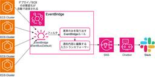

エムスリーテックブログ
https://www.m3tech.blog/
エムスリー(m3)のエンジニア・開発メンバーによる技術ブログです
フィード

【インターン参加記】フロントエンドからインフラまで全部触ってきました！！！
エムスリーテックブログ
はじめに こんにちは、エムスリーで2週間インターンをさせていただいたしーぴー (@__cp20__) です。インターンではWebバックエンドを中心としてWebフロントエンド、インフラ (IaC)、など幅広い分野のタスクをこなすことができました。このブログでは具体的にどんなタスクをこなしたか、それによって何が学べたかなどをご紹介します。 インターン最終日に撮った写真 目次 はじめに 目次 概要 キッカケ タスク1: 表示が遅すぎる請求画面の改善 解決策の検討 改善効果の測定 タスク2: ログイン導線の改善 タスク3: 請求画面のソート順序の整理 タスク4: マイクロサービスごとの Redis を…
1日前

バッチが読むテーブルのスキーマ変更をimport1行の追加で検知できるOSSを作る 2
2
エムスリーテックブログ
【Unit1 ブログリレー7日目】 こんにちは、CTOの大垣です。 このブログはUnit1ブログリレー 7日目の記事です。前日は木田さんの、大規模メンテナンスを振り返る 〜「やってよかった」準備集でした。大規模な作業だからこそ、リハーサルや実況などワイワイやることの良さが光りますね！ さて、今日の話題は、本番稼働している定期実行バッチの安全性についてです。 皆さんの環境でも、きっとたくさんのバッチが動いてますよね？ エムスリーのMR君サービスを支えるUnit1でも400以上のバッチが動いています。パーソナライズされたコンテンツの生成だったり、KPIの計測だったり、データの健全性チェックだったり…
3日前

大規模メンテナンスを振り返る 〜「やってよかった」準備集 129
エムスリーテックブログ
【Unit1 ブログリレー 6日目】 この記事はUnit1ブログリレー 6日目の記事です。前日の記事は こちら 。 エンジニアリンググループGMの木田です。 先日、数年に一度の規模のシステムメンテナンスを実施しました。メンテナンス作業自体は複数のチームが関わり、サービスの計画停止も伴う複雑な作業だったにもかかわらず、入念な準備のおかげで大きなトラブルもなく予定時間を1時間ほど前倒しで完了できました。 関係者で行った振り返りで今後も続けたいプラクティスが多く得られたので、その学びを「やってよかった」準備集として整理してお伝えします。大規模なシステムメンテナンス作業を計画している方の参考になれば幸…
4日前


極力負担が少ない形で本番データの正当性を担保する仕組みを導入した話 102
エムスリーテックブログ
【Unit1 ブログリレー4日目】こんにちは、Unit1（製薬企業向けプラットフォームチーム）の高澤です。ブログリレー3日目は河野さんによる「AWS ECSの各クラスタのデプロイの失敗を横断的に検知する方法」でした。 Unit1 では Web講演会 という医師に向けた情報の講演会ライブ配信サービスを開発・運用しています。2020年から段階的にオンプレからクラウドへの移行を進めており、この記事ではデータベースのクラウド移行と併せて本番データの正当性を担保する仕組みを構築した話をご紹介したいと思います。 背景 実現したいこと 方針検討 実装 効果とこれから We are Hiring!
6日前

AWS ECSの各クラスタのデプロイの失敗を横断的に検知する方法 27
エムスリーテックブログ
【Unit1 ブログリレー3日目】こんにちは。エンジニアリンググループ Unit1 の 河野那緒 です。ブログリレーではココまで生成AI活用に関する記事が続いておりましたが、本日は チームSRE が行なっている活動の一つを取り上げたいと思います。 Unit1 (MR君ファミリー開発チーム) では Web講演会 という医師に向けた情報の講演会ライブ配信サービスや MR君 という製薬会社の MR と医師とのコミュニケーションを支えるサービスをはじめとして、多様なサービスおよびその社内向け管理ツールを開発・運用しております。 詳細はこちらをご覧いただけたらと思います。 speakerdeck.com…
7日前

うちのチームにもDevinが来た！自律型AIは本当に"同僚"になれるのか？
エムスリーテックブログ
【Unit1 ブログリレー2日目】こんにちは、Unit1（製薬企業向けプラットフォームチーム）とデータ基盤チームを兼務しております石塚です！ ブログリレー1日目は佐野さんによる「たった9行でAIレビュー導入！Claude CodeとGitLab CIで全リポジトリにAIコードレビューを導入した話」でした。 Devinに代表される自律型AIエージェントの話題を目にする機会が増えてきました。その実力については、 「本当に人間の作業を代替できるのか？」 「どうすればうまく使いこなせるのか？」 など、多くの開発者が期待と疑問を寄せているのではないでしょうか。 この記事では、エムスリーのチームが実際にD…
9日前
たった9行でAIレビュー導入！Claude CodeとGitLab CIで全リポジトリにAIコードレビューを導入した話
エムスリーテックブログ
世の中ではDevinやGithub CopilotなどのAIコードレビューが定着しつつあります。 しかし、セルフホストGitLabを利用している企業では、対応製品が少なかったりサードパーティ製品のセキュリティチェックや保守が気になってしまい導入が進めづらいと思います。 エムスリーでは、Claude CodeとGitLab CIを組み合わせ、わずか9行でAIコードレビュー導入が可能な仕組みを構築しました。 【Unit1 ブログリレー1日目】Unit1（製薬企業向けプラットフォームチーム）のチームリーダーの佐野です。本日からUnit1のブログリレーが開始されます🎉 趣味は業務改善で、SlackWF…
10日前
新機能開発の突破口：この機能の顧客は誰？
エムスリーテックブログ
こんにちは！ エンジニアリングG プロダクトマネージャーの杉本です。 私はインターン・業務委託を経て、今年（2025年）4月にエムスリーに入社しました。現在はデジスマチームに所属し、経験豊富なチームメンバーと共に医療業界のDXに真正面から取り組んでいます。 入社してからの半年間、人生で経験したことがないような濃密な学びを重ねながら、楽しく働くことができています。このブログでは、そんな学びの1つをシェアできればと思います。 Imagenで今までの半年間を表現してみました はじめに：急成長プロダクトゆえの難しさ 顧客の声はいつも正しい、しかし… 灯台下暗し！ 突破口はすぐ近くにあった この経験から…
15日前
アンケートの分岐構造を自動解析してQAを楽にする試み
エムスリーテックブログ
【Unit7 ブログリレー7日目】こんにちは、エンジニアリンググループGMの木田です。 前日の記事は海野尾による プロダクトマネジメント1年目の学び 〜プロダクトを成功に導く「一次情報」の力〜 でした。 さて、今日はアンケートシステムの複雑な分岐制御に潜む構造的な問題を検知するための取り組みを試行錯誤した結果、一定の成果が得られたのでご紹介します。
16日前
エムスリー、実はアプリの会社です
エムスリーテックブログ
はじめに こんにちは。エンジニアリンググループ マルチデバイスチームGMの藤原聖です。 エムスリーはiOS/Androidアプリを2025年9月時点で、13サービス開発しています。 1つの会社が作っているアプリの数としては意外に多いのではないでしょうか？ 本記事ではエムスリーが実はアプリの会社であることをご紹介できればと思います。 We're App Developers
17日前
DartでQuineをダーッと書きました
エムスリーテックブログ
デジスマチームの荒谷(@_a_akira)です。 最近、社内で各言語のQuineを作成するブームが起きています。この流れに乗って、私もDartでQuineを作成してみましたので、本記事でその仕組みを解説します。 エムスリーは2025年9月10日(水)から12日(金)に開催されるDroidKaigi 2025にゴールドスポンサー、また2025年11月13日(木)に開催のFlutter Kaigi 2025にはシルバースポンサーとして協賛します。 イベントでは、今回作成したQuineをデザインしたクリアファイルをノベルティとして配布予定です。ぜひ弊社ブースにお立ち寄りいただき、お手に取ってみてくだ…
17日前
プロダクトマネジメント1年目の学び 〜プロダクトを成功に導く「一次情報」の力〜
エムスリーテックブログ
【Unit7 ブログリレー6日目】 こんにちは。エンジニアリンググループ プロダクトマネージャーの海野尾です。 Unit7に所属し、主に医師向けのアンケート/インタビューサービスのプロダクト開発に取り組んでいます。 私は2024年10月にエムスリーに入社しました。前職はIT企業でクラウドサービスの顧客提案・導入支援に携わっており、プロダクトマネージャーは今回が初挑戦になります。 気がついたらあと少しで1年が経過しようとしており、時間の経つスピードの早さに驚いていますが、この節目にこの1年間で得られた学びを振り返りたいと思います。 夏季休暇でイギリスに行ってきました。写真は湖水地方の宿からの眺め…
17日前
AI時代、どう学ぶか
エムスリーテックブログ
【Unit7 ブログリレー5日目】 Unit7のrikutoこと佐藤（@riku929hr）です。 2025年5月に入社したばかりの新参者ですが、気がつけば4ヶ月が経過しました。 今はGo言語を利用したアンケートシステムの開発に取り組んでおり、日々キャッチアップしながら刺激的な毎日を過ごしています。 入社、そしてAIエージェント到来 AI時代の学びの難しさ 手を動かすこと、理解すること 学び方はたくさんある 手を動かすのも楽しい 楽しもう！！！ We are hiring!! 入社、そしてAIエージェント到来 僕が入社すると同時期に、Claude CodeなどのAIが自律してコードを書く技術・…
18日前
エムスリーがKotlin Loverに贈るノベルティ、Kotlin Quineクリアファイルを作りました
エムスリーテックブログ
はじめに こんにちは。エンジニアリンググループ マルチデバイスチームGMの藤原聖です。 エムスリーは2025年9月10日(水)〜12日(金)に開催される『DroidKaigi 2025』のゴールドスポンサー、2025年11月1日(土)に開催される『Kotlin Fest 2025』のゴールドスポンサーをそれぞれ務めます。 そこでKotlinを愛する皆さまに楽しんでいただこうとクリアファイルを作成しました。上記のイベントの参加者向けノベルティやブース等で配布しますので、ぜひお手に取ってご覧ください。 Kotlin Quine クリアファイル 本記事はクリアファイルに記載されているコードの解説記事…
19日前
アンケートのバリデーション設計を考える 〜AIと探る実装の最適解〜
エムスリーテックブログ
【Unit7 ブログリレー4日目】 こんにちは、エムスリーエンジニアリンググループのUnit7(リサーチプロダクトチーム)でチームリーダーをやっている遠藤(@en_ken)です。 私たちのチームは、アンケートシステムをはじめとするリサーチプロダクトを開発していますが、近年、大規模なシステムリアーキテクチャを推進しています。その背景や全体像については、ぜひこちらの記事をご覧ください。 www.m3tech.blog 記事内でも触れている通り、リアーキテクチャの大きな方針として「アンケート回答機能を1つのシステムに集約する」という目標を立てました。この目標を実現するためにゼロから開発されたのが、ア…
19日前
売れるプロダクトはここから生まれる、プロダクトマネージャーが大切にすべき『違和感』
エムスリーテックブログ
【Unit7 ブログリレー3日目】こんにちは、プロダクトマネージャーの阪口です。これまでスポーツは野球一筋でしたが、息子が小学校でサッカーを始めたのをきっかけに、Jリーグや海外サッカーを見るようになりました。漫画『アオアシ』や『ブルーロック』にもハマり、今ではすっかりサッカーギークになりつつあります。私が所属するUnit7では、主に医師向けのリサーチサービスを運営しています。 試合でボールを追いかける息子 / C・ロナウドに憧れ7番 皆さんは、日々のプロダクト開発で、どのようにアイデアを生み出していますか？ エムスリーに入って約2年。幸運にも、いくつかのプロダクトを良い方向に導くことができてい…
21日前
AIコードレビューがチームの"文脈"を読めるようになるまで 〜 レビューの暗黙知を継承する育成コマンド 〜
エムスリーテックブログ
【Unit7 ブログリレー2日目】こんにちは、Unit7チームリーダーの丸山です。私が所属するUnit7では、主に医師向けのアンケートサービスの開発・運用を担当しています。 私たちのチームでは、開発プロセスを効率化し、コードの品質を向上させるためにAIによるコードレビューを活用しています。 今回は、便利なAIコードレビューが抱えていた課題と、その課題を解決するために開発した「AIレビュアー育成コマンド」についてご紹介します。 AIコードレビュー、はじめの一歩 浮かび上がった「チームの文脈が伝わらない」問題 チームの知見を学ぶ「AIレビュアー育成コマンド」 実装の裏側 使ってみた感想と今後の展望…
22日前
AIでアンケートQAはどこまで自動化できるか？プロンプトエンジニアリングの試行錯誤と実践知
エムスリーテックブログ
【Unit7 ブログリレー1日目】エムスリーエンジニアリンググループの秦野です。 Unit7というチームで、主に医師向けアンケートサービスの開発・運用を担当しています。 私たちのチームでは「ibis」というアンケート作成・配信システムを使っています。今回はこのシステムにおける業務改善の一環として、AIを活用してアンケートの品質保証（QA）プロセスを大幅に効率化した話をご紹介します。 ▼ibisについては次のブログ記事にて概要を説明しています 新しいアンケートシステムをつくった（Goとシステム概要編） - エムスリーテックブログ アンケート作成のプロセスと課題 AIによる「差分チェック」アプリケ…
23日前
エムスリーは「iOSDC Japan 2025」にゴールドスポンサーとして協賛 & ブース出展します
エムスリーテックブログ
こんにちは。エンジニアリンググループ マルチデバイスチームの藤原幹大です。 9月19日（金）から21日（日）の3日間、iOSDC Japan 2025が開催されます。昨年、エムスリーはシルバースポンサーとして協賛しましたが、今年はゴールドスポンサーとしてiOSDCを応援します。 さらに今年はブースを出展することになりました。会場にお越しの際は、ぜひエムスリーのブースに遊びに来てください。 iosdc.jp
25日前
非エンジニアもMarkdownでテストを書ける — PlaywrightとGaugeによる自動テスト
エムスリーテックブログ
はじめに エムスリーテクノロジーズの永江 (@yukinagae)です。 2025年7月からエムスリーテクノロジーズに入社し、グループ会社への技術支援をしています。詳しい業務内容は、前回の記事でも紹介しました。 支援内容は、各グループ会社の状況や参画するエンジニアのスキルによって変わりますが、共通してCI/CDの強化から始めることが多いです。なかでも特に自動テストの強化は、最初に手がけるべき施策だと考えています。 その理由は、次の3つです。 導入ハードルが低い: 既存のコードに影響を与えずに導入できる 既存コードの理解が深まる: テストを書く過程で自然とコードの動きやドメイン知識が身につく 成…
1ヶ月前
メルマガ配信基盤のバウンスメール発生率を60%減らした話
エムスリーテックブログ
はじめまして。4月にQLife(エムスリーグループ会社)に中途入社した安田(@Quarter_st)です。主に社内向けのメルマガ配信基盤の開発に携わっております。 バウンスメールはメール送信に失敗すると送信先サーバからenvelope-fromに返されるメールです。 弊社のメルマガ配信基盤で使用しているエムスリーのメールサーバの信頼性を下げないためにもバウンスメールの発生率を下げておきたいです。 今回は、そんなバウンスメールの発生理由を可視化し、発生理由が二度と相手に届かない類のものである場合は該当アドレスを送信対象から除外し、バウンスメール発生率を低下させた話をご紹介します。 はじめに バウ…
1ヶ月前
terraformで AWS ECS built-in Blue/Greenを実装しよう
エムスリーテックブログ
【Unit4 ブログリレー12日目】 エムスリーエンジニアリンググループの松山です。Unit4(m3.com開発チーム)のチームSREとしてなんでもやっています。 最近は手芸が好きで、紫外線硬化レジンで飼い猫や好きなキャラクターのグッズを作ったり、羊毛フェルトにひたすら針をさしたりしています。 この記事では、起動時の挙動が不安定なサービスのデプロイを安定させるため、ECS Blue/Greenデプロイへの切り替えを試してみた、という内容を書きます。 世界一かわいい生き物のアクキー(高さ12cm)。気泡を減らすのが今後の課題です
1ヶ月前
仕事を通して、初めてDynamoDBと向き合いました
エムスリーテックブログ
【Unit4 ブログリレー11日目】 こんにちは。昨年末に入社した、Unit4（m3.com開発チーム）エンジニアの升元です。このブログは、Unit4ブログリレー11日目の記事です。 この記事では、DynamoDBの実践の中で初めて知った仕様を紹介していきます。これからDynamoDBを検討する方の参考になればと思います。 はじめに 対象のサービスと、そこにDynamoDBが使われている理由 対象を管理するテーブルを追加しようとした 知見1: 1トランザクションの上限は100アクション 知見2: パーティションキーだけを指定して削除できない 1行ですべての対象情報を持とうとした 知見3: セッ…
1ヶ月前
サービスのパフォーマンス問題の原因をAWS Application Signalsを用いて発見・解決する
エムスリーテックブログ
【Unit4 ブログリレー10日目】 エムスリーエンジニアリンググループの松山です。Unit4(m3.com開発チーム)のチームSREをしています。最近突然aikoにハマり、300曲弱を再履修 しています。 この記事では、あるサービスでのパフォーマンス低下の原因をAWS Application Signalsによるトレースなどを用いて解決した話を書きます。 今回題材となるメンバーズメディアというサービスは、医師向けの記事執筆サービスです。 医師をはじめとする様々な分野の専門家が、医師向けの記事を執筆しています。 当サービスはバックエンドがKotlinで書かれており、ECSでホスティングされてい…
1ヶ月前
OracleのSQLをそのままBigQueryで動かしたいんですよ、絶対に。
エムスリーテックブログ
【Unit4 ブログリレー9日目】 何言ってるんですかね。でも、見てみたいかも。こんにちは、エムスリーエンジニアリンググループの福林 (@fukubaya) です。 OracleのSQLに手を加えることなくBigQueryで実行させたいことってよくありますよね(ない)。今回はその手法を紹介します。 渋谷公会堂は、東京都渋谷区宇田川町にある公会堂。本文には関係ありません。 帳票環境のBigQuery移行とチーム横断での取り組み なぜSQL変換が必要なのか - bashを駆使してSQLを組み立てる地獄 段階的移行のための並行実行環境の構築 並行実行環境のアーキテクチャ SQL変換の課題と初期アプロ…
1ヶ月前
Claude Codeで理想のタスク管理環境を30分で構築した話
エムスリーテックブログ
【Unit4 ブログリレー8日目】 エムスリー エンジニアリンググループの井本です。Unit4チーム(m3.com開発チーム)に所属しています。今日が誕生日です。 この記事では、Claude Codeを活用して30分で作成した実用的なタスク管理ツールについてお話します。
1ヶ月前
ドメイン分離でユースケースの不安定度(Instability)を下げた話
エムスリーテックブログ
【Unit4 ブログリレー7日目】 こんにちは、Unit4のキムです。この記事はUnit4チーム (m3.com開発チーム) メンバーにより投稿されるブログリレー7日目の記事です。 本記事では、近年やけに不安定になってきたユースケースコンポーネントをドメイン分離を通じて安定させた事例をご紹介します。この内容は先日のtechtalk発表内容の続きでもあるので、ぜひ発表のほうもご覧ください! youtu.be はじめに 不安定度と SDP 「今日のクイズ」と「夕方クイズ」 1. 問題診断 2. リファクタリング方針 3. 実装 3.1 ドメイン分離 3.2 ドメインサービスの導入 3.3 クロスド…
1ヶ月前
猫につけているBluetoothデバイスの信号強度と機械学習で、いまどの部屋にいるかをトラッキングする!
エムスリーテックブログ
【Unit4 ブログリレー6日目】 こんにちは、CTOの大垣です。 このブログはUnit4ブログリレー 6日目の記事です。前日は西川さんの"「なんとなくこっちの方が良い」からの脱却"でした。エンジニアリングは言葉の仕事なので、言語化を考えるのとても大事ですよね。なお、打ち合わせたわけではないんですが2日連続自分の飼い猫の写真が貼られています。 さて、その猫の話。私は猫と日々暮らしているんですが、猫ってちょっと目を離すとすぐに視界からいなくなりますよね。 移動がすごく静かな上に、隙間に入るのが好きなので、同じ部屋にいるのに見失っていることがよくあります。 さらにどの部屋にいるかもあてがつかなくな…
1ヶ月前
「なんとなくこっちの方が良い」からの脱却
エムスリーテックブログ
【Unit4 ブログリレー5日目】 こんにちは、Unit4の西川です。JavaScript が好きです。別にJavaScriptに精通しているわけではないです。 うちの猫どもです。非常に可愛い 今日は言語化の話をしたいと思います。そしてエンジニアですがデザインの話もしようかと思います。 「1つ上の行、絶対猫の画像の前に動かした方がいいよ！」 「それはどうして？」 ……という話です。
1ヶ月前